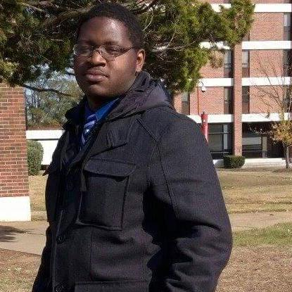

Emanuel Holmes

Electrical Engineer
Huntersville, NC 28078
Hobbies
Contact
Work Experience
Utility Designer 2
Davey Resource Group - UAM | Huntersville, NC
January 2025 to Present
- Utilize software for field data analysis
- Design aerial and underground utilities, ensuring compliance with standards including: remedy any National Electric Safety Code violations, perform pole loading analysis, incorporate utility specific standards and specifications.
- Manage permitting processes.
- Read and comprehend instructions, correspondence, and memos.
Engineer Technician
Tower Engineering Professionals | Charlotte, NC
May 2022 to July 2024
- Installed, corrected, and adjusted Fiber Optic cables on utility poles in various states up to standard respectively.
- Fielded sites for various communication companies to ensure project accuracy and readings for construction.
- Ensure Fiber to the Home is under National Electric Safety Code in various cities and states.
Distribution Designer
Duke Energy | Charlotte, NC
March 2019 to December 2021
- Mapped out new routes for secondary lines in older locations up to code.
- Responded to power outages and accidents caused in residential areas.
- Worked on SOG and 5G Small Cell teams for AT&T and Verizon contracts.
- Lead work on lighting repairs for the city of Charlotte, NC
- Identified safety concerns to management and/or specialist promptly.
- Scheduled meetings between customers to discuss construction underground lines and expectations.
Technician 1
Aramark Healthcare Technologies | Charlotte, NC
August 2016 to November 2018
- Supervised and trained other coworkers in some repair and maintenance to gain the company more money.
- Executed plans to save the company more money on research and development projects by negotiating lower prices on material.
Education
Electrical Engineering Technology (B.S. degree)
South Carolina State University | Orangeburg, SC